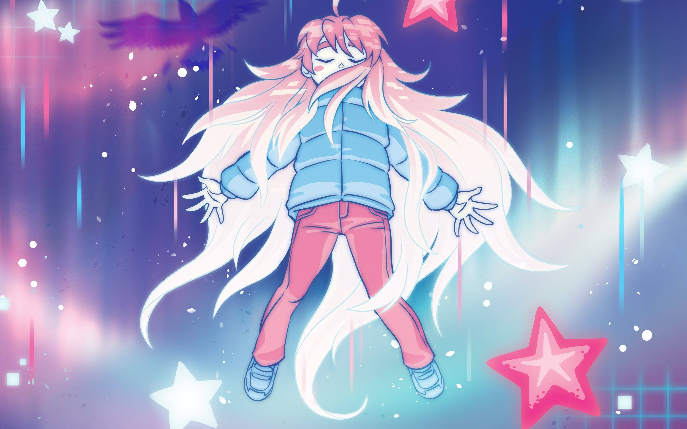

游戏评测 - 02 蔚蓝
我要爬上这座山。
返回目录
蔚蓝（Celeste）
开发商：Matt Makes Games Inc.（加拿大）
类型：横版动作
游戏的主要内容是操控 Madeline 攀登 Celeste 山，这座山十分奇特，山上有一些怪力乱神以及人的内心具象化的产物，在攀登过程中，Madeline 也逐渐克服自己的心理障碍。除登山过程外，游戏还附有各章节的高难版本，以及一个十分丰富的 DLC 章节。在游戏主要内容已经游刃有余之后，玩家还可以考虑尝试速通、炼金、mod 等多个更有挑战性的方向。
本作是 TGA 2018 年度最佳独立游戏。
核心玩法：9.25 / 10
蔚蓝是一个相当典型的横版动作冒险游戏，不过在核心玩法上有几点独特之处。一是八向冲刺感觉比较少见，这使得 Madeline（即使是在新手手上也）有比较强的机能，此外很多互动元素的设计使得 Madeline 可以在滞空时间里有比较多的操作，且提供许多方式在空中回复冲刺次数。但接下来要讲的才是本作 Gameplay 上的核心。
那就是独特的速度结算——也就是惯性机制。几乎每一章的核心机关都与速度叠加有关，这一机制被广泛地运用在原版游戏中。然而神奇的是，游戏中展示的各种惯性的玩法只是冰山一角，真正充分利用速度结算机制的情况下可以做出更强的操作，这在各种 mod 地图中可以找到无数例子。合理利用惯性可以使得 Madeline 的机能再上一个台阶。
回到原版游戏，由于开发者很有经验，所以尽管这个速度结算极为复杂，但绝大多数的元素都能在几次尝试后让人体会到不错的手感，关卡中与此有关的设计也比较符合直觉、一目了然。当然这一点也存在少量反例，就我的体验而言，游戏中也存在一些即使熟悉机制后仍然手感不好的元素，且问题最多的元素都集中于第八章。
这个游戏如果删掉第八章，我给它的分还能再高一点。我的第八章游戏体验实在是和其他章节无法相提并论。
第五章的 Theo。与后来制作的水母相比，共用类似的机制，但是由于 Theo 重量太大，导致其手感不太符合直觉。
第六章首次登场的弹球。弹球的反馈受到两个因素影响：碰撞的方向以及是否触发超级弹。这两个因素都让我费解：碰撞的方向是离散的，导致一点微小的碰撞角度变化会导致结果的宏观性不同；超级弹比较难控制，特别是对于新手，很容易搞不清楚为什么弹的一会近一会远。
第八章首次登场的岩浆块。它和弹球的问题一样，碰撞的方向是离散的。但岩浆块的问题严重得多，因为弹球至少是圆的，所以看上去结果比较符合直觉，但岩浆块是方的，弹的速度却是斜的，比较反直觉。
第八章首次登场的冰球。冰球的主要问题在于侧面的伤害判定和顶上的踩踏判定区域与视觉效果不符，同时按空格跳得更高这一点很反直觉。
难度设计：10 / 10
相比于其他同类型游戏，我觉得蔚蓝的难度设计很好，在后期关卡不乏挑战性的同时，前期的关卡又比较简单，且难度曲线相对而言十分平滑（也许 3A,3B,6B 是几个难度跳跃较大的位置，但也还好）。
A 面的通关难度都不高，然而其中存在一些较难的草莓，难度甚至超过了大部分 B 面，那么愿意挑战的人就会遭遇更困难的通关体验，而不想拿草莓也可以直接略过这些难点。B 面是游戏最折磨的部分，难度很高的同时长度又不短，同时也是游戏难度提升幅度最大的部分。而通关 B 面之后的 C 面则就像一种奖励，尽管操作密度很大，也有着很长且难的单面，但由于长度很短且手感丝滑，其体验远甚于 B 面，死亡次数也一般很少。
当然，虽然我说蔚蓝的难度设计很合理，但是本作对于大部分人来说还是一个相对很难的游戏。但是这游戏的体验就如同登山，山就在那里，爬不上去只是人的问题。我相信大部分玩家在蔚蓝中遭遇挫折的时候也只是觉得只要自己的水平再高一些就能克服它，而不会觉得游戏设计不合理。
如果一定要说有什么减分项的话，我觉得就是 C 面还不够多，不够刺激。但是后来的 DLC 弥补了这一点，一个长度足有正常章节 ABC 面加起来的第九章有约三分之一的部分都是 C 面难度的高难挑战，使得觉得前面章节没玩够的人基本上能在这里玩个够。
重玩：10 / 10
玩蔚蓝的主要乐趣来自于通关后水平的提升。不同于其他游戏，这个提升完全不是游戏内数值的提升，而完全是玩家实力的提升。
在通过所有关卡后，蔚蓝还有很多玩法。例如你可以开新档挑战更快的时间和更少的死亡次数；在这两个方面分别做到极致，就分别是打速通和炼金。无论什么方面，这个游戏的上限都是极高的，玩再长的时间都还可以有提升，并且通关时间的缩短/死亡次数的减少有着实打实的正反馈，所以也比较上头。此外，除游戏本体外还可以去玩大量 mod，存在一些如 春游/草莓酱 的系列覆盖了从官方关卡水平开始的各个难度，并且量大管饱，也是毕业玩家的归宿之一（虽然我不玩 mod 就是了）。
总的来说，蔚蓝的可重玩性很高，因为它上限很高。
舒适度：9.5 / 10
正如前面所说的，本作大多数时候手感很好，同时地图设计十分优秀，很多地方玩起来很爽。
游戏性总分：38.75 / 40
这是我目前给出的游戏性最高的分数。
优点已经在上面分列了。作为一个相对而言的硬核游戏，本作却可以给各个水平的玩家都提供非常好的游戏体验；无论是核心玩法还是关卡设计，基本上都做到了无可挑剔。
当然，以这样的游戏特色来说，本作就相对不推荐非常轻度的玩家或只希望看剧情演出的玩家游玩（但只是相对，事实上我觉得任何人接触本作都会有收获的），即使你可以开帮助模式通关，但那基本上丧失了大部分游戏性，我觉得这么玩有点买椟还珠了。当然这只是我的个人意见，我也无意教别人玩游戏。
剧情：9.5 / 10
剧情是本作的另一大亮点，相信有不少人是因为剧情的原因才坚持爬到顶的。
本作的主线就是“登山”。我所要说的第一个优点就是剧情演出和游戏性的统一：虽然游戏过程不能说和登山一样困难和危险，但总也是一场苦旅。这削弱了游戏的隔离感，使得在游戏过程中玩家和 madeline 达成了一种共鸣。这种设计十分讨巧，其主要目的是让玩家能更深刻地体会游戏的深一层剧情。
所谓的深一层剧情，就是这个游戏治愈的内核。这是一个揭示和讨论了精神病的游戏，剧情中以“山能具象化一个人的心灵”的设定将 Madeline 的抑郁/燥郁的那一部分（Badeline）具象化了出来，同时也以追逐战/boss 战的形式将 Madeline 克服心理障碍、接纳自己的过程演出了出来。我觉得值得特别一提的是第四章结尾的缆车环节。内容上，这里将平稳呼吸的过程描绘成了控制一根浮空的羽毛，让它随着深呼吸的节奏一浮一沉，这种比方是非常有道理的；结构上，也和后面第六章开头的情绪崩溃与关卡中收集金羽毛拥抱 Badeline 的情节相呼应。
可以说，游戏演出中无一处不强调着“治愈”的过程和我们游戏操作的统一性，并且让那些虚无缥缈的概念和心理活动都变成了实体。相对于 OMORI 中以平常的现实和光怪陆离的梦境形成反差从而突出创伤应激之强烈，蔚蓝则是使用设定将那些本属于心中的存在投影到现实，以带给玩家最大程度的理解和带入感。
音乐：8.5 / 10
蔚蓝的原声主要是由各个章节的 BGM 以及其 remix 版本（用于 B,C 面）和 8-bit 版本（用于磁带）组成的，作曲家是 Lena Raine。
我觉得本作的作曲十分优秀，并且比较契合各个章节的风格。并且 remix 基本上也都比较带感。但是比较可惜的是本作的音乐风格（特别是编曲风格）不太对我胃口，虽然放在游戏里还不错，但是没有能循环的曲目。我的评价是：平均质量挺高的，但没有我非常喜欢的曲子。
画面：7.75 / 10
像素风是我的一个雷点。虽然独立游戏里有很多像素风的，但是我确实是接受不了这种美术风格。
本作的画面其实感觉很接近那种传统的横版游戏，并且在大部分时候碰撞箱都和画着的元素比较贴合。可以说抛开画风不谈，我觉得本作的画面是还不错的，不过也仅此而已，在游戏过程中并没有什么画面上惊艳我的地方（我觉得还是受限于像素风，在表达上总是会有点抽象，要损失一些精细度）。
除了游戏过程的画面外，每个章节还有几张 CG，对我来说观感相对不错。不过和音乐类似，还是没对上我电波：我觉得本作 CG 的画风可能有点偏美式（？），尤其是在人物形象上，相比而言我还是更喜欢日式的画风。
演出总分：25.75 / 30
本作的演出基本能够比较好的将其主旨传达出来。并且游戏主题也算有深度，不是清汤寡水，玩完了让人十分有成就感。本作能就心理问题和相关的社会导向引起人们的一些思考，而且并不像某些政治正确游戏一样会引起人们的不适，Madeline 形象总的来说是讨喜的。
总评：38.75 + 25.75
强烈推荐横板动作游戏爱好者，特别是跳跳乐类型的受众玩家。当然，这部分人基本上不可能没有玩过 Celeste。